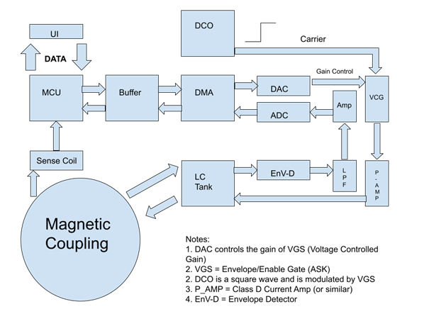
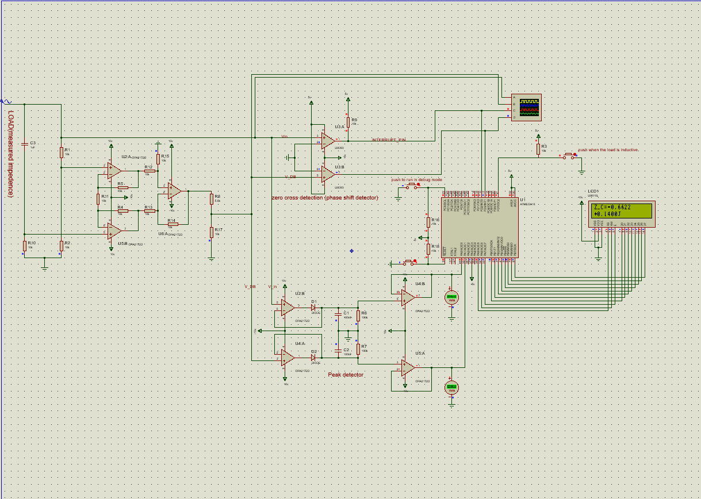
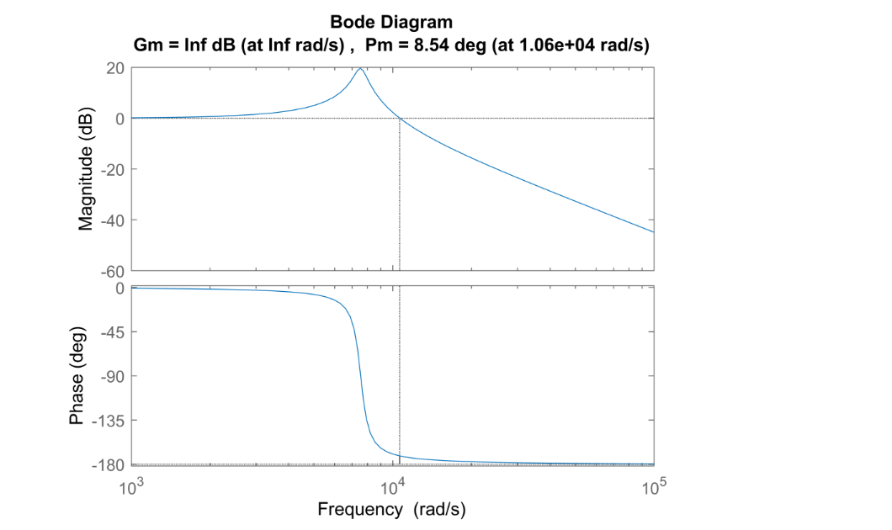

Layer philosophy: Understanding the physics (Layer 1) is necessary but not sufficient.
A circuit is a controlled physics experiment: every resistor value, every capacitor placement, every
trace width is a design decision with quantifiable consequences. The projects in this layer span
instrumentation (impedance measurement), power conversion (SMPS design), and communication
(magnetically coupled near-field network) — all requiring the same discipline of component-level
understanding combined with system-level thinking.
Projects in this Layer

Circuit
Magnetic Wireless Multi-User Communication
Near-field inductive communication at ~1 MHz. Push-pull LC driver, ASK/OOK modulation, beaconed TDMA MAC for 8 nodes over 1–3 m. Designed entirely for magnetic near-field regime (λ ≫ range). University of Oulu FabLab, January 2026.

Circuit
AVR Impedance Meter
ATmega16 impedance meter from first principles. 10 kHz AC bridge, OPA2172D differential amplifier, peak detector + zero-crossing detector for magnitude and phase. Polar-to-rectangular conversion in firmware; LCD output.

Circuit
Switched-Mode Power Supply Design
Complete SMPS design cycle: topology selection, magnetics design, SPICE simulation, Type-II compensator for 52° phase margin, Altium PCB, bench characterisation. Undergraduate final-year project combining power electronics theory with practical hardware.